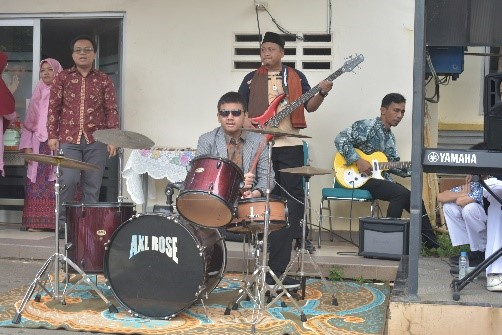

PENDIDIKAN UNTUK SEMUA

Oleh : Ayesha Qudsia Shereen (Siswa SMPIT Ummu’l Quro Depok Kelas 9E, Kelas Bina Bakat Bahasa) Pendidikan inklusif adalah sistem penyelenggaraan pendidikan yang memberikan kesempatan kepada semua peserta didik yang memiliki potensi kecerdasan dan/atau bakat istimewa untuk mengikuti pendidikan atau pembelajaran dalam satu lingkungan pendidikan secara bersama-sama dengan peserta didik pada umumnya. SMPIT Ummu’l Quro […]
RAMAIKAN HUT KE-79 KEMERDEKAAN RI, PEGAWAI UMMU’L QURO DEPOK ANTUSIAS DAN SEMANGAT IKUTI LOMBA

DEPOK – Semarak menyambut Hari Ulang Tahun ke-79 Kemerdekaan Republik Indonesia Tahun 2024 dirayakan dengan semangat oleh seluruh masyarakat Indonesia, termasuk para pegawai SIT Ummu’l Quro Depok di halaman SMPIT UQD, Sabtu (31/8) pagi. Tampilan lomba senam pegawai UQD unit pendidikan TKIT kolaborasi UKS Kali ini tampak berbeda karena agenda kegiatan senam pegawai yang […]
HARI PERTAMA MASUK SEKOLAH, INILAH KESERUAN SISWA/I SIT UMMU’L QURO DEPOK

DEPOK – Hari ini Senin (15/7), suka cita dan tawa riang memenuhi lingkungan SIT Ummu’l Quro Depok mulai dari TKIT, SDIT dan SMPIT, dengan penuh semangat memulai perjalanan pendidikan mereka. Hari pertama masuk sekolah menjadi momen berharga yang penuh emosi, baik bagi ananda maupun orang tua, dimana pondasi awal pendidikan ananda diletakkan dengan penuh harapan. Sambut […]
HAFLU TAKHRIIJ SMPIT UMMU’L QURO DEPOK ANGKATAN LIBELTICS, SEBANYAK 141 SISWA LULUS DAN DIWISUDA

Foto bersama Pengurus Harian Yayasan beserta Wakil, Kepala Sekolah SMPIT dan Wali Kelas DEPOK – Sebanyak 141 siswa/i SMPIT Ummu’l Quro Depok Angkatan 15, pada Sabtu (22/6) telah bersiap di Aula SIT untuk gelaran Haflu Takhriij, sebagai tanda telah selesai menjalani 3 tahun pendidikan atau masa belajar di SMPIT Ummu’l Quro Depok. Acara dimulai pukul […]
10 SISWA/I PENGHAFAL AL QUR’AN SMPIT, MENGIKUTI TASMI’ BIL GHAIB

10 Siswa/I SMPIT kelas 9 yang telah menyelesaikan hafalannya juz 29 DEPOK – Di SMPIT Ummu’l Quro Depok, kegiatan Tasmi’ telah dilaksanakan pada Jum’at (3/5) secara hafalan di 3 ruangan kelas 9. Kegiatan ini merupakan Rangkaian Acara Haflah Hifzhil Qur’an yang direncanakan akan dilaksanakan pada pekan ketiga bulan Mei 2024. Kegiatan Tasmi’ Bil Ghoib ini […]
SMPIT UQD SAMBUT KUNJUNGAN DARI KANGWON SCIENCE HIGH SCHOOL, SOUTH KOREA

Dewan Yayasan Umm’ul Quro Depok menerima kunjungan dari Kangwon High School, Korea Selatan terkait kerjasama yang telah lama terjalin dalam “Volunteering Program and Culture Exchange” di Aula SIT UQD, Rabu (10/1). Dalam kunjungannya turut hadir pula Pengurus Harian beserta Kepala Bagian dan perwakilan dari Dinas Pendidikan Kota Depok yang turut serta menyambut kedatangan mereka. Kunjungan […]
TAMPILAN SPEKTAKULER PERSEMBAHAN SISWA HEBAT UNTUK GURU
Peringatan Hari Guru Nasional Tahun 2023 SIT Ummu’l Quro Depok DEPOK – Usai upacara HGN dilaksanakan Senin (27/11), ada penampilan persembahan dari siswa hebat SIT Ummu’l Quro Depok untuk guru. Adapun penampilan pertama yaitu Lagu Que sera-sera yang dibawakan oleh siswa ekskul vokal SMPIT. Pesan yang dibawa dari lagu ini yaitu motivasi belajar untuk mencapai […]
Haflu Takhriij SMPIT Ummu’l Quro Depok Angkatan XIV LIGUXIV Generasi Qur’ani dengan Segudang Prestasi

Sabtu (17/06/2023) Disambut pagi yang sejuk, alhamdulillah wisuda kelulusan atau Haflu Takhrij kembali menyelenggarakan di Aula SMPIT Ummu’l Quro Depok dan live streaming channel YouTube UQD TV setelah pasca pandemi 2 tahun sebelumnya gelaran wisuda yang dilaksanakan secara virtual. Acara ini berjalan penuh khidmat dalam nuansa religius dan suka cita kelulusan. Acara dibuka oleh MC […]
Membanggakan, Siswa-siswi Hebat SMPIT Ummu’l Quro Depok Raih Dua Gelar Juara di Pekan Lomba dan Pelajar Kota Depok 2022.

Membanggakan, Siswa-siswi Hebat SMPIT Ummu’l Quro Depok Raih Dua Gelar Juara di Pekan Lomba dan Pelajar Kota Depok 2022. Depok (24/10) Siswa-siswi Hebat SMPIT Ummu’l Quro Depok kembali menorehkan prestasi di tingkat kota Depok. Kali ini di ajang Pekan Lomba dan Pelajar kota Depok yang bertajuk GRADASI “Gerak Aksi dan Raih Prestasi” yang dilaksanakan Minggu, […]
Kunjungan Kerja di SMPIT Ummu’l Quro Depok, Ms. Mi-Kyung Cheon: “Saya melihat masa depan yang cerah untuk Indonesia”

Depok (10/08) – Sekolah Menengah Pertama Islam Terpadu (SMPIT) Ummu’l Quro Depok, Kedatangan tamu dari Kementerian Pendidikan Korea Selatan didampingi Kementrian Pendidikan Kebudayaan Riset, dan Teknologi dalam rangka kunjungan kerja, Beji. Depok. Selasa (09/08/2022). Kementerian Pendidikan Korea Selatan Ms. Mi-Kyung Cheon beserta rombongan dengan didampingi Kementerian Pendidikan, Kebudayaan, Riset dan Teknologi yang diwakili Ibu. Siti […]